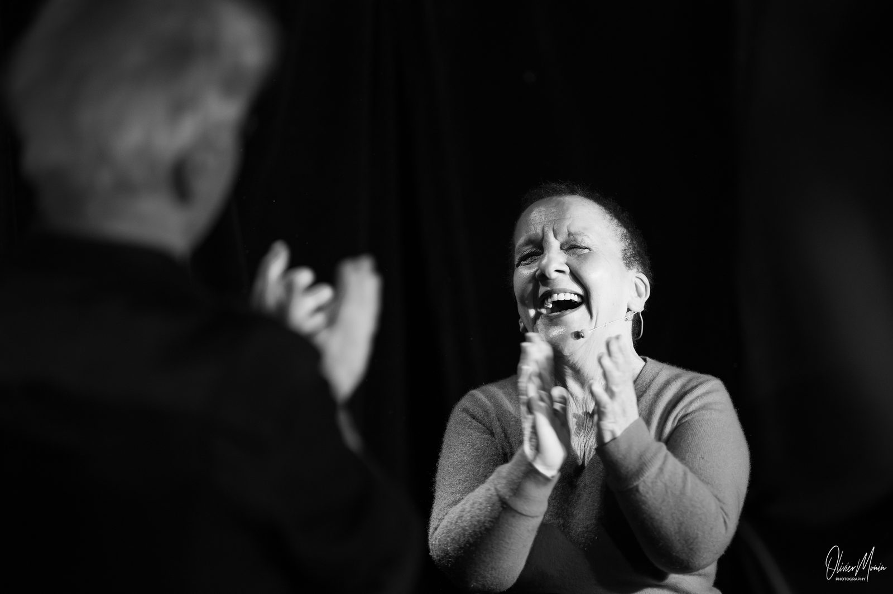

Tout commence par une vie vécue intensément. Josette Kalifa n'a pas cherché à faire un spectacle — la vie l'y a conduite.
Un livre d'abord, écrit pour réparer. Une rencontre ensuite, avec Jean Sommer, qui entend dans ce récit quelque chose d'universel. Une confiance mutuelle, une amitié qui se construit. Et puis un texte qui naît, qui prend forme, qui monte sur scène.
Trois ans de gestation — du livre au Festival d'Avignon 2026.
